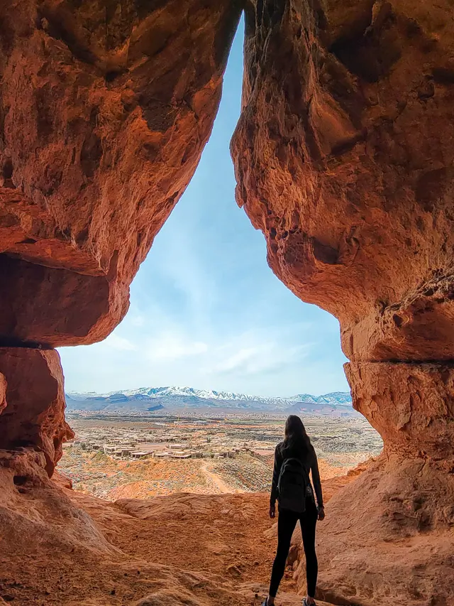
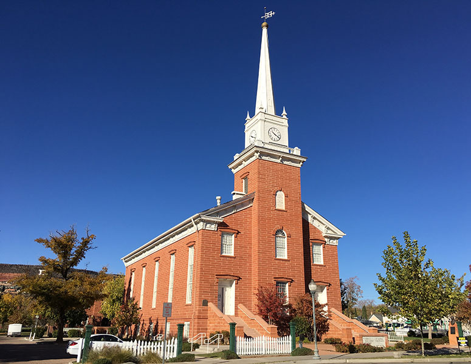
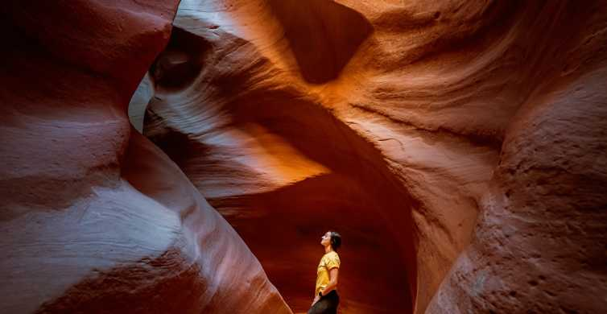
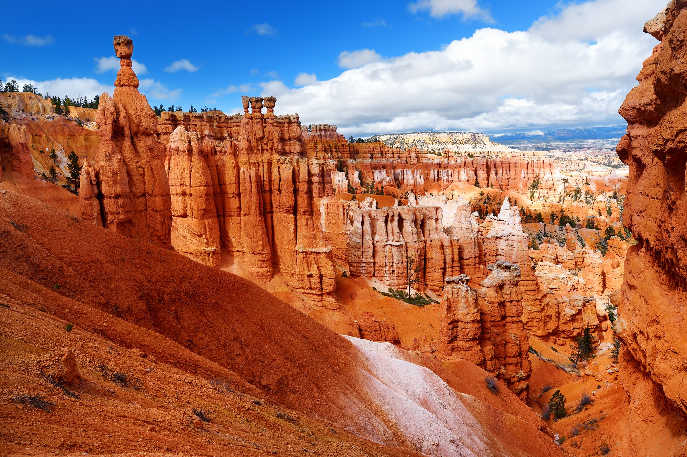

Best Resturants:
- Durango's
- Mexican Grill
- 245 Red Cliffs Dr, St. George, UT 84790
- Monday-Saturday 11am-9pm
- Honolulu Grill
- Hawaiian Food
- 706 E 700 S, St.George, UT 84770
- Monday-Saturday 11am-8pm
- Pizza Factory
- Italian Food
- 2 W St. George Blvd, St. George, UT 84770
- Monday-Saturday 11am-9pm
Best Hikes:
- Aspiration Trial
- Aspiration Trail in St. George is an inspirational trail with fun and inspiring rocks to admire while wandering the red hills
- Temple Quarry Trail
- The Temple Quarry Trail is a simple hike to the Quarry where rock was hauled to construct the St. Geroge Temple
- Scout Cave
- Scout Cave is a moderate hike leading to a large cave with beautiful views of Ivins, Utah

Best Historical Sites:
- Brigham Young Home
- Visit the winter home and office of the prophet Brigham Young
- Jacob Hamblin Home
- Visit the home of Jacob Hamblin where him and his family lived during his missionary service
- St. George Tabernacle
- Get a guided tour of the historic St. George tabernacle used as a place of worship by the pioneers

Best National Parks:
- Zion National Park

- Grand Canyon National Park

- Bryce Canyon National Park


Back To Top